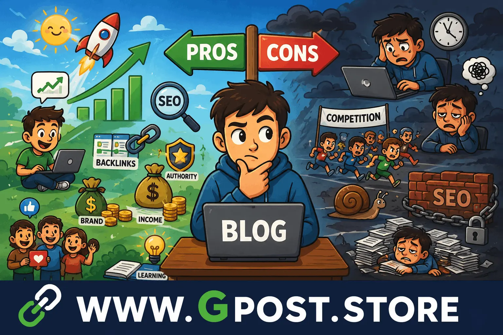

Pros and cons of blogging – Complete Guide for SEO Growth, Income & Learning in 2026
Pros and cons of blogging play a crucial role in deciding whether you should start a blog for business, education, or personal branding.
In today’s digital ecosystem, blogging is more than just writing articles. It is a complete SEO strategy that helps websites gain traffic, build authority, and generate income. However, it also comes with challenges like competition, time investment, and ranking difficulty.
This detailed guide explains everything about blogging advantages, disadvantages, SEO impact, and its importance for students and professionals.
What is Pros and cons of blogging?
Pros and cons of blogging refers to the positive benefits and negative challenges of running a blog on the internet for content sharing, marketing, or earning purposes.
Blogging is the practice of publishing valuable content regularly to attract readers, improve search rankings, and build authority in a niche.
Simple Definition
Pros and cons of blogging means understanding both the growth opportunities and limitations of blogging as a long-term digital strategy.
Why Pros and cons of blogging Matter in SEO
Understanding Pros and cons of blogging is essential for SEO success because it helps you build realistic expectations and long-term strategies.
- Improves backlink opportunities through content sharing
- Builds domain authority over time
- Supports guest posting and niche edits
- Increases organic search traffic
- Strengthens brand visibility online
Advantages of Blogging
1. Organic Traffic Growth
Blogging helps websites rank on Google and attract consistent organic visitors without paid ads.
2. Income Generation
Blogging allows monetization through affiliate marketing, ads, sponsored posts, and digital products.
3. Authority Building
Consistent blogging improves trust and establishes expertise in your niche.
4. SEO Benefits
Blogs help build backlinks, improve indexing, and enhance keyword rankings.
5. Personal Branding
Blogging creates a strong online identity for freelancers, students, and businesses.
Disadvantages of Blogging
The Disadvantages of blogging are often ignored by beginners, but they are very important to understand before starting.
1. High Competition
Millions of blogs exist, making it difficult to rank new websites quickly.
2. Time-Consuming Process
Blogging requires consistent effort, content creation, and SEO optimization.
3. Slow Results
SEO takes time, and results may take months before traffic starts growing.
4. Technical SEO Requirements
Understanding backlinks, domain authority, and keyword optimization is necessary.
5. Content Saturation
Many topics are already covered, making it harder to create unique content.
Types of Blogging
1. Free Blogging Platforms
Platforms like Blogger and WordPress.com allow beginners to start without investment.
2. Paid Blogging Websites
Self-hosted blogs provide better SEO control, monetization, and branding opportunities.
3. Niche Blogs
Focused blogs targeting specific topics like SEO, health, or technology perform better in rankings.
How Blogging Helps SEO Growth
Blogging is a powerful SEO tool when used strategically with backlinks and keyword optimization.
- Improves keyword targeting
- Increases internal linking structure
- Helps earn backlinks naturally
- Boosts domain authority over time
What are the benefits of blogging for students?
Students benefit from blogging by learning communication skills, improving writing ability, and earning online income opportunities.
Blogging also helps students understand SEO, digital marketing, and content creation from an early stage.
Key Benefits for Students
- Improves writing and research skills
- Provides freelancing opportunities
- Builds online portfolio
- Teaches SEO and digital marketing
How is blogging beneficial for students?
Blogging is beneficial for students because it develops critical thinking, communication skills, and online earning potential.
Students can also build authority in academic or technical niches while learning real-world SEO strategies.
Image Section

Visual representation of blogging advantages and disadvantages in SEO strategy
Step-by-Step Blogging Strategy
1. Research
Find profitable keywords and analyze competitors before writing content.
2. Content Creation
Write high-quality, SEO-optimized articles with proper keyword placement.
3. Outreach
Use guest posting and outreach to gain backlinks and authority. For advanced techniques, check Guest Posting Outreach.
4. Link Building
Build strong backlinks using niche edits and authority websites. Learn scalable methods in Guest Post Link Building.
Common Blogging Mistakes
- Using spammy backlinks
- Ignoring SEO optimization
- Overstuffing keywords
- Publishing low-quality content
Pro SEO Tips for Blogging
- Use natural anchor text strategy
- Focus on internal linking structure
- Target niche-specific keywords
- Build high-quality backlinks
Is Blogging Still Worth It in 2026?
Yes, blogging is still highly valuable in 2026 due to increasing demand for content and SEO-driven traffic.
However, success requires consistency, SEO knowledge, and strategic content planning.
When to Avoid Blogging
Blogging may not be suitable if you expect instant results or lack patience for long-term SEO growth.
It also requires effort in content creation, keyword research, and backlink building.
FAQs – Pros and cons of blogging
1. What are Pros and cons of blogging for beginners?
Beginners get traffic benefits but face challenges like SEO learning curve and slow ranking results initially.
2. What is the biggest advantage of blogging?
The biggest advantage is organic traffic growth through SEO and long-term online authority building.
3. What are the Disadvantages of blogging?
Major disadvantages include high competition, slow growth, and continuous content creation requirements for success.
4. How does blogging help SEO?
Blogging improves SEO by generating backlinks, increasing keyword rankings, and enhancing domain authority.
5. What are benefits of blogging for students?
Students gain writing skills, freelancing opportunities, SEO knowledge, and online earning potential through blogging.
6. Is blogging still profitable in 2026?
Yes, blogging remains profitable with proper SEO, niche selection, and consistent high-quality content creation strategy.
7. How to rank a blog faster?
Use keyword optimization, backlinks, niche relevance, and strong internal linking for faster ranking results.
8. What tools are used in blogging?
Common tools include keyword planners, SEO analyzers, backlink checkers, and content optimization platforms.
9. How do backlinks help blogging?
Backlinks improve authority, boost rankings, and increase organic traffic from search engines effectively.
10. What is the future of blogging?
Blogging will continue growing with AI integration, SEO evolution, and content-driven marketing trends.
Conclusion
Pros and cons of blogging clearly show that blogging is a powerful but long-term digital strategy.
It offers huge benefits like traffic, authority, and income opportunities, but also requires patience, SEO knowledge, and consistency.
If used correctly with proper backlink strategies, guest posting, and niche targeting, blogging can become a sustainable online business model.
For deeper SEO insights, visit
SEO Backlink Strategy 2026 – What Actually Works (Guest Posting Case Study)
to explore advanced strategies and practical implementation techniques.